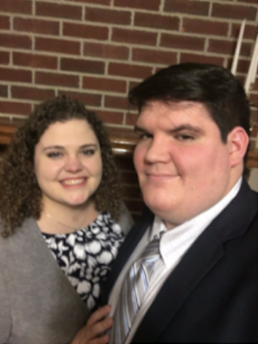

Emily and Tyler met at New Castle United Methodist Church in elementary school. They
began dating seriously November 23, 2012. Soon after Emily graduated with her Bachelors
degree (January 27th, 2018 to be exact), Tyler took Emily to her favorite mexican
restaurant in LaGrange, KY. While in LaGrange, Tyler suggested that the couple go visit
the park where they used to spend time together while in high school. When
they arrived, the gazebo in the park was surrounded with candles, rose petals, flowers,
and champagne. Tyler had enlisted a few friends to help make this night as magical as
possible. The couple slowly walked from the car to the gazebo where Tyler got down on one
knee and asked Emily to marry him. She gave him a resounding YES!